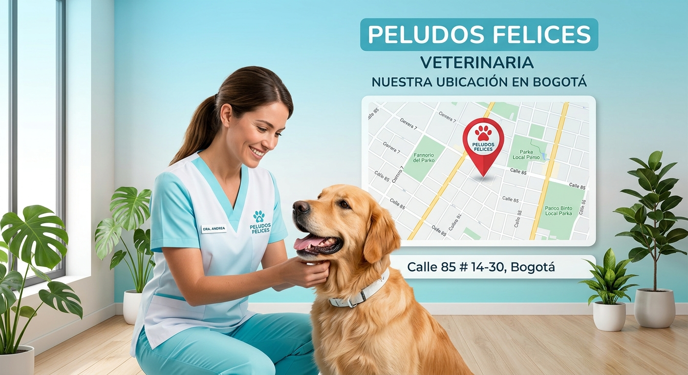
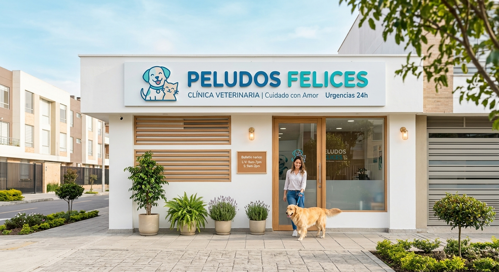
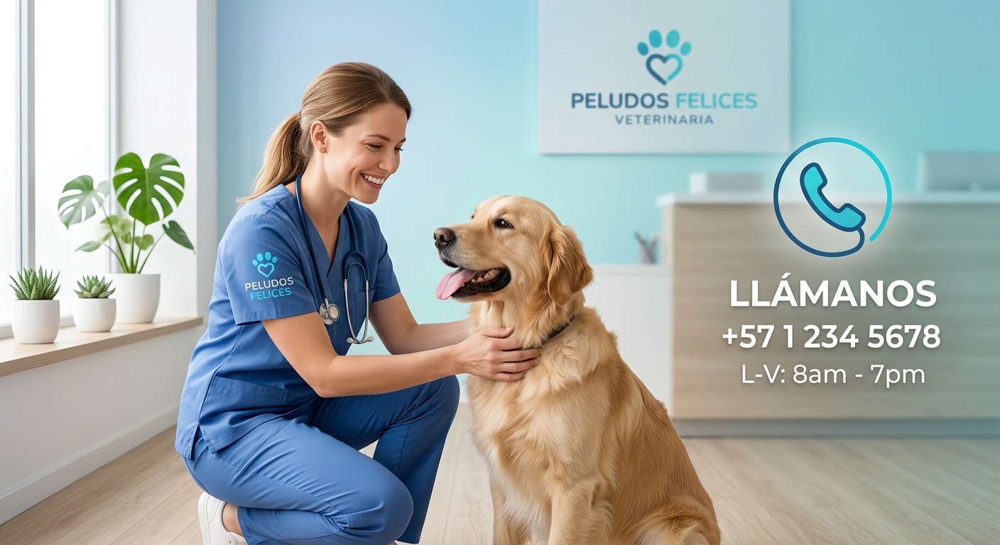
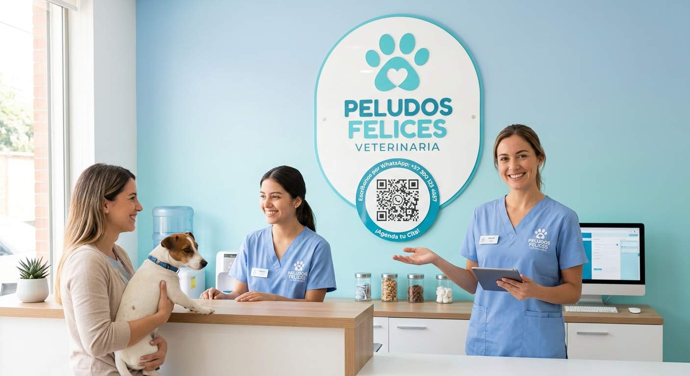

Contacto
En Peludos Felices te recibimos con atención cálida, rápida y profesional.


Llámanos
+57 350 374 4064
Escríbenos
WhatsApp o correo

Atención personalizada
Recuerda que nuestro equipo está listo para ayudarte en cada consulta, urgencia y seguimiento.
Dirección: Calle Falsa 123, Ciudad Peluda
Teléfono: 555-0199
Horario: Lunes a Viernes de 9:00 a 18:00